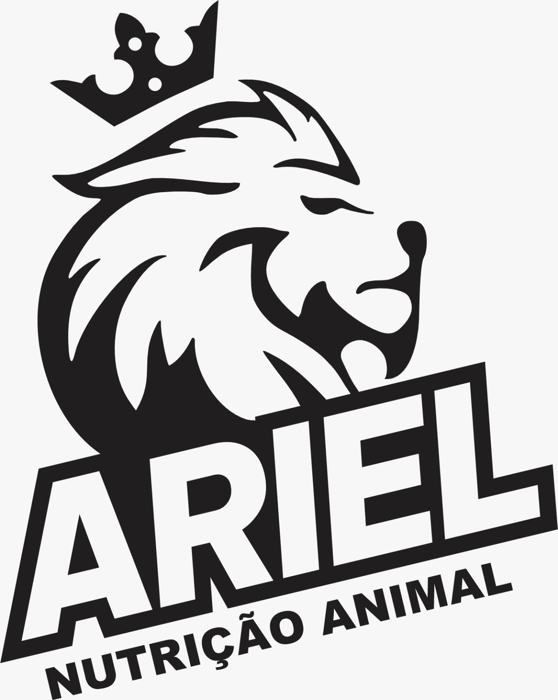

Ferramenta gratuitaCopie para cá os níveis de garantia e o consumo recomendado que estão no rótulo do saco. A página faz as contas e mostra, item por item, se o produto cumpre os mínimos do Ministério da Agricultura para a categoria em que foi vendido.
Limites da Instrução Normativa MAPA nº 12/2004 para suplementos de bovinos em pastejo. Tudo é calculado sobre o consumo recomendado no próprio rótulo, convertido para gramas por 100 kg de peso vivo por dia.
| Critério | Limite | Vale para |
|---|